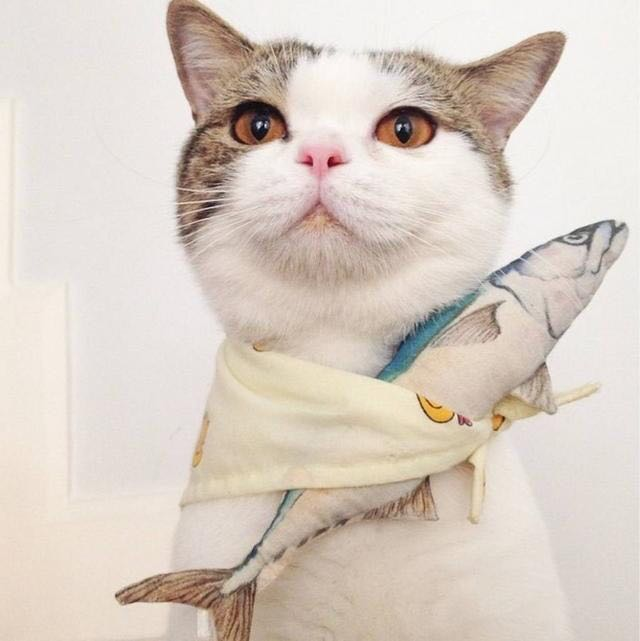

又是一个阳光灿烂的中午，看了一上午的报纸，茶水也顺带喝了不少，肚子早已经咕咕作响了，今天中午吃点什么了，貌似楼下的新开张的盒饭还不错，于是我来到楼下准备买上一盒。
菜色还不错，价格有6元，8元，10元，12元，20元的，像哥这样的精英管理人才，怎么着也的吃最高级的才配合身份，就在我准备购买时，一个响亮的声音响起。
"老板，给我一份10元的盒饭"。
顺势撇了一眼，一个小伙子，眉开眼笑的靠近盒饭铺，今天是1号，看样子是发工资了。就当他走近时，看到了我，刚才的欢愉的表情瞬时黯淡下去，他知道我认出了他，靠，满头白里带一点黑的头发，永远没睡醒的眼神，以及那凌乱的胡渣子，都出卖了他的身份。我继续狠狠的盯着他，他越发的羞愧了，我犀利的眼神正在和他做着底层通信，我默默的向他传达一个信息，
"你，也配吃10元的盒饭?"。
他哀怜的眼神似乎在祈求我不要拆穿他的身份，可惜，哥这么有正义感的人，怎么能在这个时候放弃原则!
"你不是隔壁公司的程序员么?"
就这一瞬间，他整个人似乎崩溃下去，刚才欢愉的表情彻底变为哭丧，周围的小摊贩以及路人甲乙丙丁，都纷纷投来了鄙视的眼光，他瘟鸡一样的双手抓着头发，痛苦的蹲了下去。
就在这时，人群中终于有人忍不住了，大声呵骂到，
"呸，程序员也敢吃10元的盒饭，真不要脸"
一位老大娘好心的提醒到，
"小伙子啊，你一个程序员，挣点钱不容易啊，怎么吃10元的盒饭啊"
一名打扮妖艳入时的姑娘说到，
"人家当小姐的都才吃10元，你也敢要10元的?"
我义正言辞的给他说到，
"我说一句话顶你写一万行代码，也才吃20元的盒饭，你竟敢吃10元的"
老板也发话了，
"是程序员啊，太不好意思了，你吃6元的吧，不然人家知道我卖了你10元的，我这生意就做不了啊"
他终于发出颤抖的声音说到
"对不起，我刚才说错了，给我一份6元的"。
这时人群中爆发出激烈的掌声，我知道，这是我又一次坚持原则，换来的荣誉的赞赏!
此处省略一万字.....
(function () {
for(var i=0;i<5;i++){
setTimeout(function(){
console.log(i)
},1000)
}
})()

extend_.extend(destination, *sources)
复制source对象中的所有属性覆盖到destination对象上，并且返回 destination 对象. 复制是按顺序的, 所以后面的对象属性会把前面的对象属性覆盖掉(如果有重复).
示例：
备注：
extend_.extend(destination, *sources)
复制source对象中的所有属性覆盖到destination对象上，并且返回 destination 对象. 复制是按顺序的, 所以后面的对象属性会把前面的对象属性覆盖掉(如果有重复).
示例：
备注：
extend_.extend(destination, *sources)
复制source对象中的所有属性覆盖到destination对象上，并且返回 destination 对象. 复制是按顺序的, 所以后面的对象属性会把前面的对象属性覆盖掉(如果有重复).
示例：
备注：
extend_.extend(destination, *sources)
复制source对象中的所有属性覆盖到destination对象上，并且返回 destination 对象. 复制是按顺序的, 所以后面的对象属性会把前面的对象属性覆盖掉(如果有重复).
示例：
备注：
extend_.extend(destination, *sources)
复制source对象中的所有属性覆盖到destination对象上，并且返回 destination 对象. 复制是按顺序的, 所以后面的对象属性会把前面的对象属性覆盖掉(如果有重复).
示例：
备注：